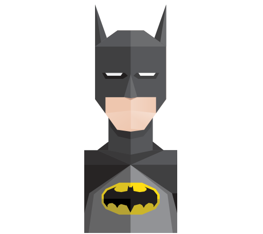

Aquaman
El poder mas reconocido de Aquaman es la capacidad telepatica para comunicarse con la vida marina, la cual puede convocar a grandes distancias.
Batman
Los rasgos principales de Batman se resumen en «destreza física, habilidades deductivas y obsesión». La mayor parte de las características básicas de los cómics han variado por las diferentes interpretaciones que le han dado al personaje.

Super Man
Superman es un superhéroe ficticio que aparece en los cómics publicados por DC Comics. Es uno de los personajes de ficción más populares del siglo XX.
Wonder Woman
Es una superheroína ficticia creada por el psicólogo y escritor William Moulton Marston para la editorial DC Comics. Sus historias se centran en los ideales del amor, paz y sexualidad.